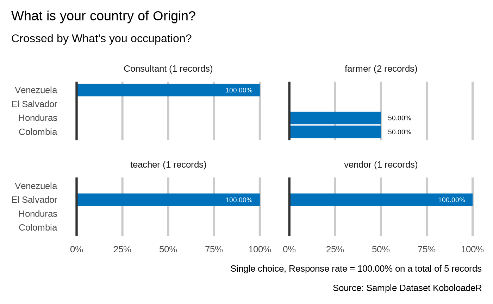
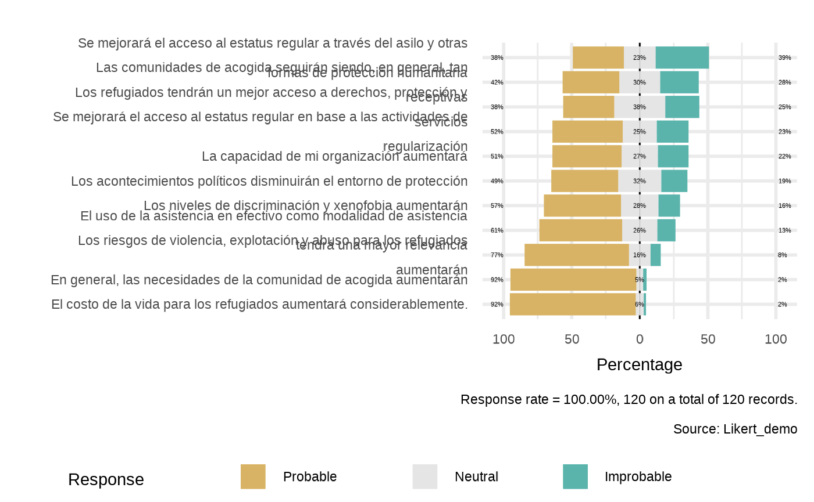
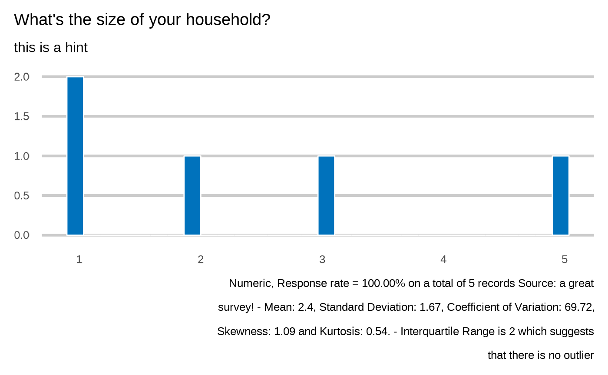
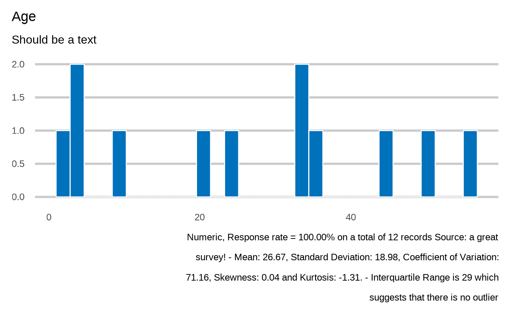

Crunching Function for XlsForm
Source:vignettes/crunching-function-for-xlsform.Rmd
crunching-function-for-xlsform.RmdPreparing objects
Data loading
datalist <- kobo_data(datapath = system.file("data.xlsx", package = "kobocruncher") )
# MainFrame
datalist[1]
#> [[1]]
#> # A tibble: 5 × 25
#> today date location profile.country
#> <dttm> <dttm> <chr> <chr>
#> 1 2022-05-03 00:00:00 2022-04-21 00:00:00 private_facility VEN
#> 2 2022-05-03 00:00:00 2022-05-03 00:00:00 home HND
#> 3 2022-05-03 00:00:00 2022-04-20 00:00:00 subcenter SLV
#> 4 2022-05-03 00:00:00 2022-05-02 00:00:00 subcenter SLV
#> 5 2022-05-03 00:00:00 2022-05-04 00:00:00 home COL
#> # … with 21 more variables: profile.occupation <chr>, profile.reason <chr>,
#> # profile.reason.accomodation <dbl>, profile.reason.employment <dbl>,
#> # profile.reason.education <dbl>, profile.reason.community <dbl>,
#> # profile.reason.safety <dbl>, profile.reason.movement <dbl>,
#> # profile.reason.reunification <dbl>, profile.reason.no_answer <dbl>,
#> # profile.reason.other <dbl>, profile.HHSize <dbl>, `_id` <dbl>,
#> # `_uuid` <chr>, `_submission_time` <dttm>, `_validation_status` <lgl>, …
# Second Frame - based on presence of repeat within the form, aka nested or
# hierarchical data structure, etc...
datalist[2]
#> [[1]]
#> # A tibble: 12 × 13
#> members.age members.sex `_index` `_parent_table_name` `_parent_index`
#> <dbl> <chr> <dbl> <chr> <dbl>
#> 1 56 male 1 Sample Dataset KoboloadeR 1
#> 2 2 male 2 Sample Dataset KoboloadeR 2
#> 3 3 male 3 Sample Dataset KoboloadeR 2
#> 4 10 female 4 Sample Dataset KoboloadeR 2
#> 5 45 male 5 Sample Dataset KoboloadeR 2
#> 6 35 female 6 Sample Dataset KoboloadeR 2
#> 7 4 male 7 Sample Dataset KoboloadeR 3
#> 8 34 female 8 Sample Dataset KoboloadeR 3
#> 9 34 male 9 Sample Dataset KoboloadeR 3
#> 10 51 female 10 Sample Dataset KoboloadeR 4
#> 11 21 male 11 Sample Dataset KoboloadeR 5
#> 12 25 female 12 Sample Dataset KoboloadeR 5
#> # … with 8 more variables: `_submission__id` <dbl>, `_submission__uuid` <chr>,
#> # `_submission__submission_time` <dttm>,
#> # `_submission__validation_status` <lgl>, `_submission__notes` <lgl>,
#> # `_submission__status` <chr>, `_submission__submitted_by` <lgl>,
#> # `_submission__tags` <lgl>Extend the xlsform to add instructions for the analysis plan
Now we can extend the xlsform that was used to document key next steps in the data preparation.
# kobo_prepare_form(xlsformpath = system.file("form.xlsx", package = "kobocruncher"),
# xlsformpathout = "form_with_plan.xlsx")Prepare data dictionnary
dico <- kobo_dico( xlsformpath = system.file("sample_xlsform.xlsx", package = "kobocruncher") )
# Survey
questions <- as.data.frame(dico[1])
knitr::kable(utils::head(questions, 10))| type | list_name | name | label | hint | repeatvar | scope | dataframe | chapter | subchapter | disaggregation | correlate | appearance |
|---|---|---|---|---|---|---|---|---|---|---|---|---|
| today | NA | today | NA | NA | 1 | NA | NA | NA | NA | |||
| date | NA | date | Interview date | this is a hint | 1 | NA | NA | NA | NA | |||
| select_one | location | location | Where is the interview taking place | this is a hint | 1 | NA | NA | NA | NA | |||
| begin_group | NA | profile | Respondant profile | NA | profile | 1 | NA | NA | NA | NA | ||
| select_one | countries | profile.country | What is your country of Origin? | this is a hint | profile | 1 | NA | NA | NA | NA | ||
| text | NA | profile.occupation | What’s you occupation? | this is a hint | profile | 1 | NA | NA | NA | NA | ||
| select_multiple | reasons | profile.reason | Why did you left? | this is a hint | profile | 1 | NA | NA | NA | NA | ||
| integer | NA | profile.HHSize | What’s the size of your household? | this is a hint | profile | 1 | NA | NA | NA | NA | ||
| end_group | NA | NA | NA | NA | 1 | NA | NA | NA | NA | |||
| begin_repeat | NA | members | Please enter information for each family member | NA | members | 2 | NA | NA | NA | NA |
# Choices
responses <- as.data.frame(dico[2])
knitr::kable(utils::head(responses, 10))| list_name | name | label | order |
|---|---|---|---|
| location | home | Home | NA |
| location | subcenter | Community Center | NA |
| location | private_facility | Private facility | NA |
| sex | male | Male | NA |
| sex | female | Female | NA |
| countries | COL | Colombia | NA |
| countries | CUB | Cuba | NA |
| countries | SLV | El Salvador | NA |
| countries | GTM | Guatemala | NA |
| countries | HND | Honduras | NA |
# Settings
metadata <- as.data.frame(dico[3])
knitr::kable(utils::head(metadata, 10))| form_title | form_id |
|---|---|
| Sample Dataset KoboloadeR | koboloadeR |
# Report ToC
toc <- as.data.frame(dico[4])
knitr::kable(utils::head(toc, 10))| type | label | name |
|---|---|---|
| today | NA | today |
| date | Interview date | date |
| select_one | Where is the interview taking place | location |
| begin_group | Respondant profile | profile |
| select_one | What is your country of Origin? | profile.country |
| text | What’s you occupation? | profile.occupation |
| select_multiple | Why did you left? | profile.reason |
| integer | What’s the size of your household? | profile.HHSize |
| begin_repeat | Please enter information for each family member | members |
| integer | Age | members.age |
# Indicator
indicator <- as.data.frame(dico[5])
knitr::kable(utils::head(indicator, 10))| type | name | label | hint | dataframe | calculation | chapter | subchapter | disaggregation | correlate | cluster | predict | score | mappoint | mappoly |
|---|
Data Processing
Cleaning
to do….
# dico <- kobo_dico( xlsformpath = system.file("sample_xlsform.xlsx", package = "kobocruncher") )
# datalist <- kobo_data(datapath = system.file("data.xlsx", package = "kobocruncher") )
#
# kobo_clean(datalist = datalist,
# dico = dico,
# indicatoradd = indicatoradd )
Anonymisation
to do….
# dico <- kobo_dico( xlsformpath = system.file("sample_xlsform.xlsx", package = "kobocruncher") )
# datalist <- kobo_data(datapath = system.file("data.xlsx", package = "kobocruncher") )
#
# kobo_anonymise(datalist = datalist,
# dico = dico,
# indicatoradd = indicatoradd )
Indicator Calculation
Indicator calculation
xlsformpath <- system.file("sample_xlsform.xlsx", package = "kobocruncher")
xlsformpathout <- "sample_xlsform_withindic.xlsx"
dico <- kobo_dico( xlsformpath = system.file("sample_xlsform.xlsx", package = "kobocruncher") )
datalist <- kobo_data(datapath = system.file("data.xlsx", package = "kobocruncher") )
## Example 1: Simple dummy filter
indicatoradd <- c( name = "inColombia",
type = "select_one",
label = "Is from Colombia",
dataframe = "1",
calculation = "dplyr::if_else(datalist[[1]]$profile.country ==\"COL\", \"yes\",\"no\")")
expanded <- kobo_indicator(datalist = datalist,
dico = dico,
indicatoradd = indicatoradd ,
xlsformpath = xlsformpath,
xlsformpathout = xlsformpathout)
## Replace existing
dico <- expanded[[1]]
datalist <- expanded[[2]]
## Check my new indicator
table(datalist[[1]]$inColombia, useNA = "ifany")
#>
#> no yes
#> 4 1
## Example 2: calculation on nested elements
indicatoradd <- c( name = "hasfemalemembers",
type = "select_one",
label = "HH has female members ",
dataframe = "1",
calculation = "datalist[[2]] |>
dplyr::select( members.sex, parent_index) |>
tidyr::gather( parent_index, members.sex) |>
dplyr::count(parent_index, members.sex) |>
tidyr::spread(members.sex, n, fill = 0) |>
dplyr::select( female)")
expanded <- kobo_indicator(datalist = datalist,
dico = dico,
indicatoradd = indicatoradd ,
xlsformpath = xlsformpath,
xlsformpathout = xlsformpathout)
## Replace existing
dico <- expanded[[1]]
datalist <- expanded[[2]]
## Check my new indicator
table(datalist[[1]]$hasfemalemembers, useNA = "ifany")
#> female
#> 0 1 2
#> 1 3 1Labeling functions
Get the correct frame for a specific variable
dico <- kobo_dico( xlsformpath = system.file("sample_xlsform.xlsx", package = "kobocruncher") )
datalist <- kobo_data(datapath = system.file("data.xlsx", package = "kobocruncher") )
data <- kobo_frame(datalist = datalist,
dico = dico,
var = "members.sex" )
knitr::kable(utils::head(data,5))| members.age | members.sex | X_index | X_parent_table_name | X_parent_index | X_submission__id | X_submission__uuid | X_submission__submission_time | X_submission__validation_status | X_submission__notes | X_submission__status | X_submission__submitted_by | X_submission__tags | X_id |
|---|---|---|---|---|---|---|---|---|---|---|---|---|---|
| 56 | male | 1 | Sample Dataset KoboloadeR | 1 | 20759478 | 48cc75b7-3d86-4c3e-a99b-24b4032b7b9c | 2022-05-04 21:28:46 | NA | NA | submitted_via_web | NA | NA | 1 |
| 2 | male | 2 | Sample Dataset KoboloadeR | 2 | 20756978 | f1c3d36c-3c25-4581-9f35-9c8ec405d744 | 2022-05-04 20:15:14 | NA | NA | submitted_via_web | NA | NA | 2 |
| 3 | male | 3 | Sample Dataset KoboloadeR | 2 | 20756978 | f1c3d36c-3c25-4581-9f35-9c8ec405d744 | 2022-05-04 20:15:14 | NA | NA | submitted_via_web | NA | NA | 3 |
| 10 | female | 4 | Sample Dataset KoboloadeR | 2 | 20756978 | f1c3d36c-3c25-4581-9f35-9c8ec405d744 | 2022-05-04 20:15:14 | NA | NA | submitted_via_web | NA | NA | 4 |
| 45 | male | 5 | Sample Dataset KoboloadeR | 2 | 20756978 | f1c3d36c-3c25-4581-9f35-9c8ec405d744 | 2022-05-04 20:15:14 | NA | NA | submitted_via_web | NA | NA | 5 |
Get the label for a specific variable
dico <- kobo_dico( xlsformpath = system.file("sample_xlsform.xlsx", package = "kobocruncher") )
label_varname(dico = dico,
x ="profile.country")
#> [1] "What is your country of Origin?"Get interpretation hint for a specific variable
dico <- kobo_dico( xlsformpath = system.file("sample_xlsform.xlsx", package = "kobocruncher") )
label_varhint(dico = dico,
x ="profile.country")
#> [1] "this is a hint"Get all the choices labels options for a specific variable
dico <- kobo_dico( xlsformpath = system.file("sample_xlsform.xlsx", package = "kobocruncher") )
datalist <- kobo_data(datapath = system.file("data.xlsx", package = "kobocruncher") )
data <- kobo_frame(datalist = datalist,
dico = dico,
var = "profile.country" )
label_choiceset(dico = dico,
x="profile.country")(data$profile.country)
#> [1] "Venezuela" "Honduras" "El Salvador" "El Salvador" "Colombia"
## Test when there's no dictionnary
data$profile.occupation
#> [1] "Consultant" "farmer" "vendor" "teacher" "farmer"
label_choiceset(dico = dico,
x="profile.occupation")(data$profile.occupation)
#> [1] "Consultant" "farmer" "vendor" "teacher" "farmer"Plotting Functions
Plotting Select one variable
dico <- kobo_dico( xlsformpath = system.file("sample_xlsform.xlsx", package = "kobocruncher") )
datalist <- kobo_data(datapath = system.file("data.xlsx", package = "kobocruncher") )
plot_select_one(datalist = datalist,
dico = dico,
var = "profile.country",
showcode = TRUE)
#> Loading required namespace: ggplot2
#> What is your country of Origin?
#> <svg aria-hidden="true" role="img" viewBox="0 0 448 512" style="height:1em;width:0.88em;vertical-align:-0.125em;margin-left:auto;margin-right:auto;font-size:inherit;fill:grey;overflow:visible;position:relative;"><path d="M433.941 65.941l-51.882-51.882A48 48 0 0 0 348.118 0H176c-26.51 0-48 21.49-48 48v48H48c-26.51 0-48 21.49-48 48v320c0 26.51 21.49 48 48 48h224c26.51 0 48-21.49 48-48v-48h80c26.51 0 48-21.49 48-48V99.882a48 48 0 0 0-14.059-33.941zM266 464H54a6 6 0 0 1-6-6V150a6 6 0 0 1 6-6h74v224c0 26.51 21.49 48 48 48h96v42a6 6 0 0 1-6 6zm128-96H182a6 6 0 0 1-6-6V54a6 6 0 0 1 6-6h106v88c0 13.255 10.745 24 24 24h88v202a6 6 0 0 1-6 6zm6-256h-64V48h9.632c1.591 0 3.117.632 4.243 1.757l48.368 48.368a6 6 0 0 1 1.757 4.243V112z"/></svg>`plot_select_one(datalist = datalist, dico = dico, "profile.country")`
#>
#>
#> Loading required package: ggplot2
plot_select_one(datalist = datalist,
dico = dico,
var = "profile.countryerror",
showcode = TRUE)
#> <strong style="color:#0072BC;">This variable could not be identified in the dataset</strong>Plotting Select multiple variable
dico <- kobo_dico( xlsformpath = system.file("sample_xlsform.xlsx", package = "kobocruncher") )
datalist <- kobo_data(datapath = system.file("data.xlsx", package = "kobocruncher") )
plot_select_multiple(datalist = datalist,
dico = dico,
var = "profile.reason",
showcode = TRUE
)
#> Why did you left?
#> <svg aria-hidden="true" role="img" viewBox="0 0 448 512" style="height:1em;width:0.88em;vertical-align:-0.125em;margin-left:auto;margin-right:auto;font-size:inherit;fill:grey;overflow:visible;position:relative;"><path d="M433.941 65.941l-51.882-51.882A48 48 0 0 0 348.118 0H176c-26.51 0-48 21.49-48 48v48H48c-26.51 0-48 21.49-48 48v320c0 26.51 21.49 48 48 48h224c26.51 0 48-21.49 48-48v-48h80c26.51 0 48-21.49 48-48V99.882a48 48 0 0 0-14.059-33.941zM266 464H54a6 6 0 0 1-6-6V150a6 6 0 0 1 6-6h74v224c0 26.51 21.49 48 48 48h96v42a6 6 0 0 1-6 6zm128-96H182a6 6 0 0 1-6-6V54a6 6 0 0 1 6-6h106v88c0 13.255 10.745 24 24 24h88v202a6 6 0 0 1-6 6zm6-256h-64V48h9.632c1.591 0 3.117.632 4.243 1.757l48.368 48.368a6 6 0 0 1 1.757 4.243V112z"/></svg> `plot_select_multiple(datalist = datalist, dico = dico, "profile.reason")`
#>
#> 
plot_select_multiple(datalist = datalist,
dico = dico,
var = "profile.reason1",
showcode = TRUE
)
#> <strong style="color:#0072BC;">This variable could not be identified in the dataset</strong>Plotting Numeric variable
dico <- kobo_dico( xlsformpath = system.file("sample_xlsform.xlsx", package = "kobocruncher") )
datalist <- kobo_data(datapath = system.file("data.xlsx", package = "kobocruncher") )
plot_integer(datalist = datalist,
dico = dico,
var = "members.age",
showcode = TRUE)
#> Age
#> <svg aria-hidden="true" role="img" viewBox="0 0 448 512" style="height:1em;width:0.88em;vertical-align:-0.125em;margin-left:auto;margin-right:auto;font-size:inherit;fill:grey;overflow:visible;position:relative;"><path d="M433.941 65.941l-51.882-51.882A48 48 0 0 0 348.118 0H176c-26.51 0-48 21.49-48 48v48H48c-26.51 0-48 21.49-48 48v320c0 26.51 21.49 48 48 48h224c26.51 0 48-21.49 48-48v-48h80c26.51 0 48-21.49 48-48V99.882a48 48 0 0 0-14.059-33.941zM266 464H54a6 6 0 0 1-6-6V150a6 6 0 0 1 6-6h74v224c0 26.51 21.49 48 48 48h96v42a6 6 0 0 1-6 6zm128-96H182a6 6 0 0 1-6-6V54a6 6 0 0 1 6-6h106v88c0 13.255 10.745 24 24 24h88v202a6 6 0 0 1-6 6zm6-256h-64V48h9.632c1.591 0 3.117.632 4.243 1.757l48.368 48.368a6 6 0 0 1 1.757 4.243V112z"/></svg> `plot_integer(datalist = datalist, dico = dico, "members.age")`
#>
#>
#> `stat_bin()` using `bins = 30`. Pick better value with `binwidth`.
Plotting Open Text variable
dico <- kobo_dico( xlsformpath = system.file("sample_xlsform.xlsx", package = "kobocruncher") )
datalist <- kobo_data(datapath = system.file("data.xlsx", package = "kobocruncher") )
plot_text(datalist = datalist,
dico = dico,
var = "profile.occupation",
showcode = TRUE)
#> Loading required package: tm
#> Loading required package: NLP
#>
#> Attaching package: 'NLP'
#> The following object is masked from 'package:ggplot2':
#>
#> annotate
#> Warning in tm_map.SimpleCorpus(., toSpace, "/"): transformation drops documents
#> Warning in tm_map.SimpleCorpus(., toSpace, "@"): transformation drops documents
#> Warning in tm_map.SimpleCorpus(., toSpace, "\\|"): transformation drops
#> documents
#> Warning in tm_map.SimpleCorpus(., content_transformer(tolower)): transformation
#> drops documents
#> Warning in tm_map.SimpleCorpus(., removeNumbers): transformation drops documents
#> Warning in tm_map.SimpleCorpus(., removePunctuation): transformation drops
#> documents
#> Warning in tm_map.SimpleCorpus(., stripWhitespace): transformation drops
#> documents
#> Warning in tm_map.SimpleCorpus(., stemDocument): transformation drops documents
#> Warning in tm_map.SimpleCorpus(., removeWords, stopwords("english")):
#> transformation drops documents
#> Warning in tm_map.SimpleCorpus(., removeWords, c("blabla1", "blabla2")):
#> transformation drops documents
#> What's you occupation?
#> <svg aria-hidden="true" role="img" viewBox="0 0 448 512" style="height:1em;width:0.88em;vertical-align:-0.125em;margin-left:auto;margin-right:auto;font-size:inherit;fill:grey;overflow:visible;position:relative;"><path d="M433.941 65.941l-51.882-51.882A48 48 0 0 0 348.118 0H176c-26.51 0-48 21.49-48 48v48H48c-26.51 0-48 21.49-48 48v320c0 26.51 21.49 48 48 48h224c26.51 0 48-21.49 48-48v-48h80c26.51 0 48-21.49 48-48V99.882a48 48 0 0 0-14.059-33.941zM266 464H54a6 6 0 0 1-6-6V150a6 6 0 0 1 6-6h74v224c0 26.51 21.49 48 48 48h96v42a6 6 0 0 1-6 6zm128-96H182a6 6 0 0 1-6-6V54a6 6 0 0 1 6-6h106v88c0 13.255 10.745 24 24 24h88v202a6 6 0 0 1-6 6zm6-256h-64V48h9.632c1.591 0 3.117.632 4.243 1.757l48.368 48.368a6 6 0 0 1 1.757 4.243V112z"/></svg> `plot_text(datalist = datalist, dico = dico, "profile.occupation")`
Plotting Select one variable with cross tabulation
dico <- kobo_dico( xlsformpath = system.file("sample_xlsform.xlsx", package = "kobocruncher") )
datalist <- kobo_data(datapath = system.file("data.xlsx", package = "kobocruncher") )
plot_select_one_cross(datalist = datalist,
dico = dico,
var = "profile.country",
by_var = "profile.occupation",
showcode = TRUE
)
#> What is your country of Origin?
#> <svg aria-hidden="true" role="img" viewBox="0 0 448 512" style="height:1em;width:0.88em;vertical-align:-0.125em;margin-left:auto;margin-right:auto;font-size:inherit;fill:grey;overflow:visible;position:relative;"><path d="M433.941 65.941l-51.882-51.882A48 48 0 0 0 348.118 0H176c-26.51 0-48 21.49-48 48v48H48c-26.51 0-48 21.49-48 48v320c0 26.51 21.49 48 48 48h224c26.51 0 48-21.49 48-48v-48h80c26.51 0 48-21.49 48-48V99.882a48 48 0 0 0-14.059-33.941zM266 464H54a6 6 0 0 1-6-6V150a6 6 0 0 1 6-6h74v224c0 26.51 21.49 48 48 48h96v42a6 6 0 0 1-6 6zm128-96H182a6 6 0 0 1-6-6V54a6 6 0 0 1 6-6h106v88c0 13.255 10.745 24 24 24h88v202a6 6 0 0 1-6 6zm6-256h-64V48h9.632c1.591 0 3.117.632 4.243 1.757l48.368 48.368a6 6 0 0 1 1.757 4.243V112z"/></svg> `plot_select_one_cross(datalist = datalist, dico = dico, "profile.country","profile.occupation")`
#>
#> 
## test if variable are not in the same frame...
plot_select_one_cross(datalist = datalist,
dico = dico,
var = "profile.country",
by_var = "members.sex",
showcode = TRUE
)
#> NULLPlotting Select multiple variable with cross-tabulation
dico <- kobo_dico( xlsformpath = system.file("sample_xlsform.xlsx", package = "kobocruncher") )
datalist <- kobo_data(datapath = system.file("data.xlsx", package = "kobocruncher") )
plot_select_multiple_cross(datalist = datalist,
dico = dico,
var = "profile.reason",
by_var = "location",
showcode = TRUE)
#> Why did you left?
#> <svg aria-hidden="true" role="img" viewBox="0 0 448 512" style="height:1em;width:0.88em;vertical-align:-0.125em;margin-left:auto;margin-right:auto;font-size:inherit;fill:grey;overflow:visible;position:relative;"><path d="M433.941 65.941l-51.882-51.882A48 48 0 0 0 348.118 0H176c-26.51 0-48 21.49-48 48v48H48c-26.51 0-48 21.49-48 48v320c0 26.51 21.49 48 48 48h224c26.51 0 48-21.49 48-48v-48h80c26.51 0 48-21.49 48-48V99.882a48 48 0 0 0-14.059-33.941zM266 464H54a6 6 0 0 1-6-6V150a6 6 0 0 1 6-6h74v224c0 26.51 21.49 48 48 48h96v42a6 6 0 0 1-6 6zm128-96H182a6 6 0 0 1-6-6V54a6 6 0 0 1 6-6h106v88c0 13.255 10.745 24 24 24h88v202a6 6 0 0 1-6 6zm6-256h-64V48h9.632c1.591 0 3.117.632 4.243 1.757l48.368 48.368a6 6 0 0 1 1.757 4.243V112z"/></svg> `plot_select_multiple_cross(datalist = datalist, dico = dico, "profile.reason","location")`
#>
#> 
Plotting Numeric variable with cross-tabulation
dico <- kobo_dico( xlsformpath = system.file("sample_xlsform.xlsx", package = "kobocruncher") )
datalist <- kobo_data(datapath = system.file("data.xlsx", package = "kobocruncher") )
plot_integer_cross(datalist = datalist,
dico = dico,
var = "members.age",
by_var = "members.sex",
showcode = TRUE)
#> NULLPlotting Correlation
dico <- kobo_dico( xlsformpath = system.file("sample_xlsform.xlsx", package = "kobocruncher") )
datalist <- kobo_data(datapath = system.file("data.xlsx", package = "kobocruncher") )
plot_correlation(datalist = datalist,
dico = dico,
var = "profile.occupation")
#> NULLPlotting Likert
dicolikert <- kobo_dico( xlsformpath = system.file("form_likert.xlsx", package = "kobocruncher") )
datalistlikert <- kobo_data(datapath = system.file("data_likert.xlsx", package = "kobocruncher") )
plot_likert(datalist = datalistlikert,
dico = dicolikert)
#> Loading required package: dplyr
#>
#> Attaching package: 'dplyr'
#> The following objects are masked from 'package:stats':
#>
#> filter, lag
#> The following objects are masked from 'package:base':
#>
#> intersect, setdiff, setequal, union
#> Loading required package: likert
#> Loading required package: xtable
#>
#> Attaching package: 'likert'
#> The following object is masked from 'package:dplyr':
#>
#> recode
#> Loading required package: cowplot
#> Warning: `funs()` was deprecated in dplyr 0.8.0.
#> Please use a list of either functions or lambdas:
#>
#> # Simple named list:
#> list(mean = mean, median = median)
#>
#> # Auto named with `tibble::lst()`:
#> tibble::lst(mean, median)
#>
#> # Using lambdas
#> list(~ mean(., trim = .2), ~ median(., na.rm = TRUE))
#> This warning is displayed once every 8 hours.
#> Call `lifecycle::last_lifecycle_warnings()` to see where this warning was generated.

Plotting Header variable
dico <- kobo_dico( xlsformpath = system.file("sample_xlsform.xlsx", package = "kobocruncher") )
plot_header( dico = dico,
var = "profile")
#> ---
#>
#>
#>
#> # Respondant profileReport generation
Crunching Variables based on a plan
dico <- kobo_dico( xlsformpath = system.file("sample_xlsform.xlsx", package = "kobocruncher") )
datalist <- kobo_data(datapath = system.file("data.xlsx", package = "kobocruncher") )
kobo_cruncher(datalist = datalist,
dico = dico)
#> Where is the interview taking place
#> <svg aria-hidden="true" role="img" viewBox="0 0 448 512" style="height:1em;width:0.88em;vertical-align:-0.125em;margin-left:auto;margin-right:auto;font-size:inherit;fill:grey;overflow:visible;position:relative;"><path d="M433.941 65.941l-51.882-51.882A48 48 0 0 0 348.118 0H176c-26.51 0-48 21.49-48 48v48H48c-26.51 0-48 21.49-48 48v320c0 26.51 21.49 48 48 48h224c26.51 0 48-21.49 48-48v-48h80c26.51 0 48-21.49 48-48V99.882a48 48 0 0 0-14.059-33.941zM266 464H54a6 6 0 0 1-6-6V150a6 6 0 0 1 6-6h74v224c0 26.51 21.49 48 48 48h96v42a6 6 0 0 1-6 6zm128-96H182a6 6 0 0 1-6-6V54a6 6 0 0 1 6-6h106v88c0 13.255 10.745 24 24 24h88v202a6 6 0 0 1-6 6zm6-256h-64V48h9.632c1.591 0 3.117.632 4.243 1.757l48.368 48.368a6 6 0 0 1 1.757 4.243V112z"/></svg>`plot_select_one(datalist = datalist, dico = dico, "location")`
#>
#> #> ---
#>
#>
#>
#> # Respondant profile
#>
#> What is your country of Origin?
#> <svg aria-hidden="true" role="img" viewBox="0 0 448 512" style="height:1em;width:0.88em;vertical-align:-0.125em;margin-left:auto;margin-right:auto;font-size:inherit;fill:grey;overflow:visible;position:relative;"><path d="M433.941 65.941l-51.882-51.882A48 48 0 0 0 348.118 0H176c-26.51 0-48 21.49-48 48v48H48c-26.51 0-48 21.49-48 48v320c0 26.51 21.49 48 48 48h224c26.51 0 48-21.49 48-48v-48h80c26.51 0 48-21.49 48-48V99.882a48 48 0 0 0-14.059-33.941zM266 464H54a6 6 0 0 1-6-6V150a6 6 0 0 1 6-6h74v224c0 26.51 21.49 48 48 48h96v42a6 6 0 0 1-6 6zm128-96H182a6 6 0 0 1-6-6V54a6 6 0 0 1 6-6h106v88c0 13.255 10.745 24 24 24h88v202a6 6 0 0 1-6 6zm6-256h-64V48h9.632c1.591 0 3.117.632 4.243 1.757l48.368 48.368a6 6 0 0 1 1.757 4.243V112z"/></svg>`plot_select_one(datalist = datalist, dico = dico, "profile.country")`
#>
#>
#> Warning in tm_map.SimpleCorpus(., toSpace, "/"): transformation drops documents
#> Warning in tm_map.SimpleCorpus(., toSpace, "@"): transformation drops documents
#> Warning in tm_map.SimpleCorpus(., toSpace, "\\|"): transformation drops
#> documents
#> Warning in tm_map.SimpleCorpus(., content_transformer(tolower)): transformation
#> drops documents
#> Warning in tm_map.SimpleCorpus(., removeNumbers): transformation drops documents
#> Warning in tm_map.SimpleCorpus(., removePunctuation): transformation drops
#> documents
#> Warning in tm_map.SimpleCorpus(., stripWhitespace): transformation drops
#> documents
#> Warning in tm_map.SimpleCorpus(., stemDocument): transformation drops documents
#> Warning in tm_map.SimpleCorpus(., removeWords, stopwords("english")):
#> transformation drops documents
#> Warning in tm_map.SimpleCorpus(., removeWords, c("blabla1", "blabla2")):
#> transformation drops documents#> What's you occupation?
#> <svg aria-hidden="true" role="img" viewBox="0 0 448 512" style="height:1em;width:0.88em;vertical-align:-0.125em;margin-left:auto;margin-right:auto;font-size:inherit;fill:grey;overflow:visible;position:relative;"><path d="M433.941 65.941l-51.882-51.882A48 48 0 0 0 348.118 0H176c-26.51 0-48 21.49-48 48v48H48c-26.51 0-48 21.49-48 48v320c0 26.51 21.49 48 48 48h224c26.51 0 48-21.49 48-48v-48h80c26.51 0 48-21.49 48-48V99.882a48 48 0 0 0-14.059-33.941zM266 464H54a6 6 0 0 1-6-6V150a6 6 0 0 1 6-6h74v224c0 26.51 21.49 48 48 48h96v42a6 6 0 0 1-6 6zm128-96H182a6 6 0 0 1-6-6V54a6 6 0 0 1 6-6h106v88c0 13.255 10.745 24 24 24h88v202a6 6 0 0 1-6 6zm6-256h-64V48h9.632c1.591 0 3.117.632 4.243 1.757l48.368 48.368a6 6 0 0 1 1.757 4.243V112z"/></svg> `plot_text(datalist = datalist, dico = dico, "profile.occupation")`#> Why did you left?
#> <svg aria-hidden="true" role="img" viewBox="0 0 448 512" style="height:1em;width:0.88em;vertical-align:-0.125em;margin-left:auto;margin-right:auto;font-size:inherit;fill:grey;overflow:visible;position:relative;"><path d="M433.941 65.941l-51.882-51.882A48 48 0 0 0 348.118 0H176c-26.51 0-48 21.49-48 48v48H48c-26.51 0-48 21.49-48 48v320c0 26.51 21.49 48 48 48h224c26.51 0 48-21.49 48-48v-48h80c26.51 0 48-21.49 48-48V99.882a48 48 0 0 0-14.059-33.941zM266 464H54a6 6 0 0 1-6-6V150a6 6 0 0 1 6-6h74v224c0 26.51 21.49 48 48 48h96v42a6 6 0 0 1-6 6zm128-96H182a6 6 0 0 1-6-6V54a6 6 0 0 1 6-6h106v88c0 13.255 10.745 24 24 24h88v202a6 6 0 0 1-6 6zm6-256h-64V48h9.632c1.591 0 3.117.632 4.243 1.757l48.368 48.368a6 6 0 0 1 1.757 4.243V112z"/></svg> `plot_select_multiple(datalist = datalist, dico = dico, "profile.reason")`
#>
#> 
#> What's the size of your household?
#> <svg aria-hidden="true" role="img" viewBox="0 0 448 512" style="height:1em;width:0.88em;vertical-align:-0.125em;margin-left:auto;margin-right:auto;font-size:inherit;fill:grey;overflow:visible;position:relative;"><path d="M433.941 65.941l-51.882-51.882A48 48 0 0 0 348.118 0H176c-26.51 0-48 21.49-48 48v48H48c-26.51 0-48 21.49-48 48v320c0 26.51 21.49 48 48 48h224c26.51 0 48-21.49 48-48v-48h80c26.51 0 48-21.49 48-48V99.882a48 48 0 0 0-14.059-33.941zM266 464H54a6 6 0 0 1-6-6V150a6 6 0 0 1 6-6h74v224c0 26.51 21.49 48 48 48h96v42a6 6 0 0 1-6 6zm128-96H182a6 6 0 0 1-6-6V54a6 6 0 0 1 6-6h106v88c0 13.255 10.745 24 24 24h88v202a6 6 0 0 1-6 6zm6-256h-64V48h9.632c1.591 0 3.117.632 4.243 1.757l48.368 48.368a6 6 0 0 1 1.757 4.243V112z"/></svg> `plot_integer(datalist = datalist, dico = dico, "profile.HHSize")`
#>
#>
#> `stat_bin()` using `bins = 30`. Pick better value with `binwidth`.
#> Age
#> <svg aria-hidden="true" role="img" viewBox="0 0 448 512" style="height:1em;width:0.88em;vertical-align:-0.125em;margin-left:auto;margin-right:auto;font-size:inherit;fill:grey;overflow:visible;position:relative;"><path d="M433.941 65.941l-51.882-51.882A48 48 0 0 0 348.118 0H176c-26.51 0-48 21.49-48 48v48H48c-26.51 0-48 21.49-48 48v320c0 26.51 21.49 48 48 48h224c26.51 0 48-21.49 48-48v-48h80c26.51 0 48-21.49 48-48V99.882a48 48 0 0 0-14.059-33.941zM266 464H54a6 6 0 0 1-6-6V150a6 6 0 0 1 6-6h74v224c0 26.51 21.49 48 48 48h96v42a6 6 0 0 1-6 6zm128-96H182a6 6 0 0 1-6-6V54a6 6 0 0 1 6-6h106v88c0 13.255 10.745 24 24 24h88v202a6 6 0 0 1-6 6zm6-256h-64V48h9.632c1.591 0 3.117.632 4.243 1.757l48.368 48.368a6 6 0 0 1 1.757 4.243V112z"/></svg> `plot_integer(datalist = datalist, dico = dico, "members.age")`
#>
#>
#> `stat_bin()` using `bins = 30`. Pick better value with `binwidth`.
#> Sex
#> <svg aria-hidden="true" role="img" viewBox="0 0 448 512" style="height:1em;width:0.88em;vertical-align:-0.125em;margin-left:auto;margin-right:auto;font-size:inherit;fill:grey;overflow:visible;position:relative;"><path d="M433.941 65.941l-51.882-51.882A48 48 0 0 0 348.118 0H176c-26.51 0-48 21.49-48 48v48H48c-26.51 0-48 21.49-48 48v320c0 26.51 21.49 48 48 48h224c26.51 0 48-21.49 48-48v-48h80c26.51 0 48-21.49 48-48V99.882a48 48 0 0 0-14.059-33.941zM266 464H54a6 6 0 0 1-6-6V150a6 6 0 0 1 6-6h74v224c0 26.51 21.49 48 48 48h96v42a6 6 0 0 1-6 6zm128-96H182a6 6 0 0 1-6-6V54a6 6 0 0 1 6-6h106v88c0 13.255 10.745 24 24 24h88v202a6 6 0 0 1-6 6zm6-256h-64V48h9.632c1.591 0 3.117.632 4.243 1.757l48.368 48.368a6 6 0 0 1 1.757 4.243V112z"/></svg>`plot_select_one(datalist = datalist, dico = dico, "members.sex")`
#>
#> Report Template A for Automatic Data Exploration
The first RMD template gives an output in HTML for easy navigation - the left menu provides smooth transition.
It includes a function to automatically run throughout all the survey content. During this stage, data cleaning and new variable creation can be performed through iterations
This report also includes each plot syntax so that they can be easily pasted for the second report
#' Initial Template for Automatic Data Exploration
#' The first RMD template gives an output in HTML for easy navigation - the left menu provides smooth transition.
#' It includes a function to automatically run throughout all the survey content. During this stage, data cleaning and new variable creation can be performed through iterations
#' This report also includes each plot syntax so that they can be easyly pasted for the second report
# usethis::use_rmarkdown_template(
# template_name = "template_1_exploration",
# template_dir = NULL,
# template_description = "Automatic Data Exploration - html",
# template_create_dir = TRUE
# )Report Template B for Joint Data Interpretation Session
The second template is used following the systematic data exploration. It will generate a PowerPoint presentation
See a more detailed presentation of that step here: https://www.youtube.com/watch?v=0jE-Y7g88K4&feature=youtu.be&t=2305
#' Second Template to prepare a presentation for the Joint Data Interpretation Session
#'
# usethis::use_rmarkdown_template(
# template_name = "template_2_interpretation",
# template_dir = NULL,
# template_description = "Joint Data Interpretation",
# template_create_dir = TRUE
# )Report Template C for Dissemination and Data Story Telling Template
The last template can be used to take note of the data interpretation session.
It will generate a PDF or an paginated HTML page
#' Report Template 3 for Dissemination and Data Story Telling Template
#' The last template can be used to take note of the data interpretation session.
#' It will generate a PDF or an paginated HTML page
# usethis::use_rmarkdown_template(
# template_name = "template_3_dissemination",
# template_dir = NULL,
# template_description = "Data brief and Story Telling",
# template_create_dir = TRUE
# )